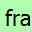

The filter toolbar lets you quickly edit and apply display filters. More information on display filters is available in Section 6.3, “Filtering Packets While Viewing”.
Table 3.15. Filter toolbar items
| Toolbar Icon | Name | Description |
|---|---|---|
| Bookmarks | Manage or select saved filters. |
 | Filter Input | The area to enter or edit a display filter string, see Section 6.4, “Building Display Filter Expressions”. A syntax check of your filter string is done while you are typing. The background will turn red if you enter an incomplete or invalid string, and will become green when you enter a valid string. After you’ve changed something in this field, don’t forget to press the Apply button (or the Enter/Return key), to apply this filter string to the display. This field is also where the current applied filter is displayed. |
Clear | Reset the current display filter and clear the edit area. | |
Apply | Apply the current value in the edit area as the new display filter. Applying a display filter on large capture files might take quite a long time. | |
Recent | Select from a list of recently applied filters. | |
Add Button | Add a new filter button. | |
Filter Button | Filter buttons are handy shortcuts that apply a display filter as soon as you press them. You can create filter buttons by pressing the button, right-clicking in the filter button area, or opening the Filter Button section of the Preferences Dialog. The example shows a filter button with the label “Squirrels”. If you have lots of buttons you can arrange them into groups by using “//” as a label separator. For example, if you create buttons named “Not Squirrels // Rabbits” and “Not Squirrels // Capybaras” they will show up in the toolbar under a single button named “Not Squirrels”. |